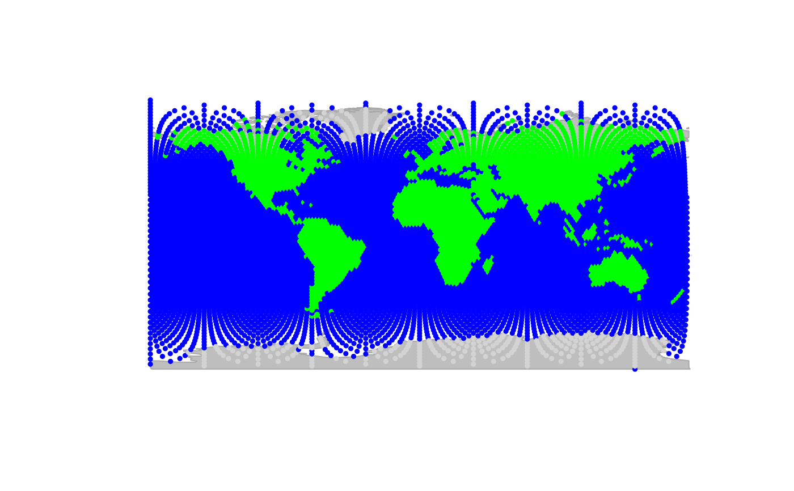
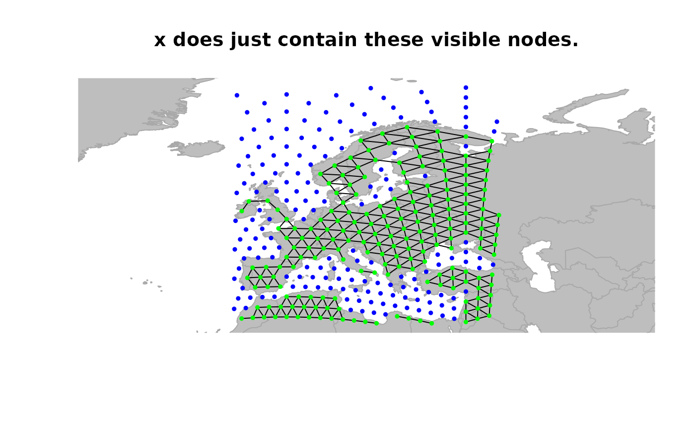
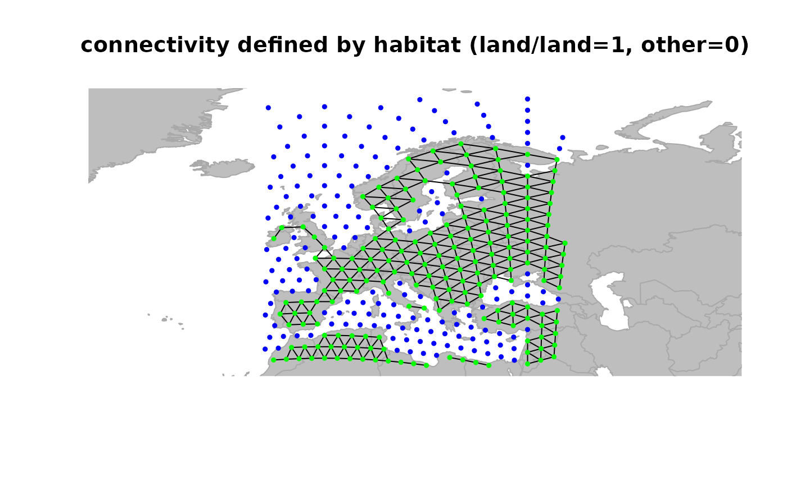
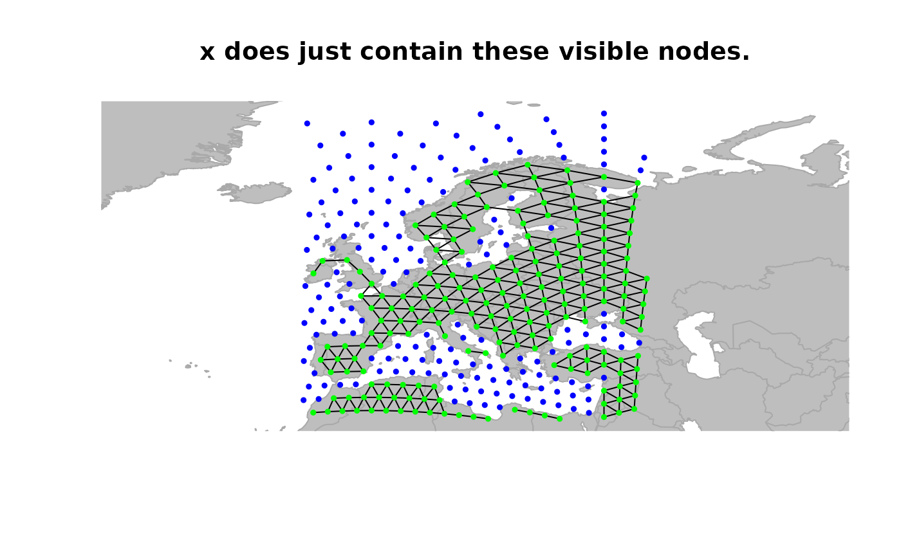
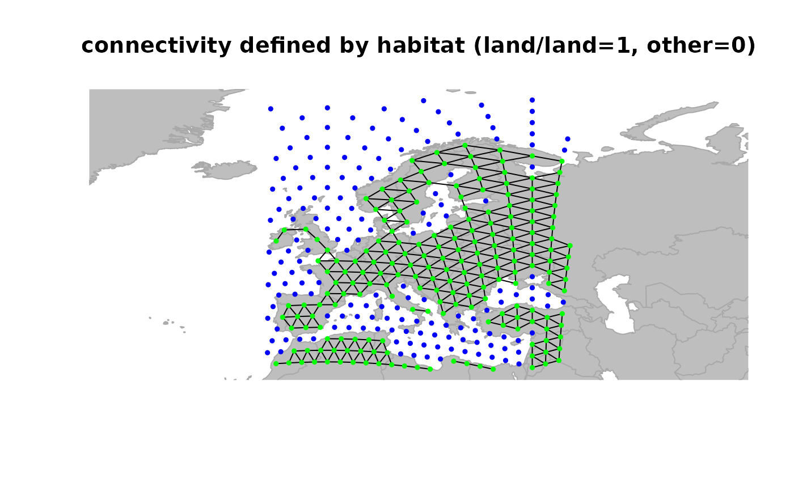

The geoGraph package
geoGraph-package.RdThis package implements classes and methods for large-scale georeferenced
data handled through spatial graphs.
Details
Main functionalities of geoGraph are summarized below.
=== DATA HANDLING ===
In geoGraph, data are stored as a particular
formal class named gGraph. This class contains spatial
coordinates of a set of nodes (@coords), attributes for these nodes
(@nodes.attr), meta-information about nodes attributes (@meta), and a graph
of connections between nodes of class graphNEL (@graph).
Several functions are available for handling gGraph data:
some accessors allow to access slots of an object, sometimes with additional treatment of information:
getGraph,getNodesAttr,getCoords,getNodes,getEdges,getCosts.setEdges: add/remove edges specified edges.setCosts: set costs of edges.hasCosts: tests if the graph is weighted (i.e., has non-uniform costs).isInArea: finds which nodes are in the currently plotted area.areConnected: tests if nodes are directly connected.connectivityPlot: plot connected components with different colors.dropDeadEdges: suppress edges whose weight is null.closestNode: given a longitude and a latitude, finds the closest node; specific values of node attribute can be provided, for instance, to find the closest node on land.show: printing of gGraph objects.extractFromLayer: extract information from GIS layers.findLand: checks which nodes are on land.setCosts: define edges weights accoring to rules specified in the @meta slot.geo.add.edges,geo.remove.edges: graphical functions for adding or removing edges.geo.change.attr: graphical functions for changing attributes of nodes.
=== GRAPHICS ===geoGraph aims at providing advanced graphical
facilities, such as zooming in or out particular area, moving the plotted
area, or visualizing connectivity between nodes.
plot: plot method with various options, allowing to display a shapefile (by default, the map of the world), using color according to attributes, showing connectivity between nodes, etc.points: similar to plot method, except that a new plot is not created.plotEdges: the specific function plotting edges. It detects if the object is a weighted graph, and plots edges accordingly.geo.zoomin,geo.zoomout: zoom in and out a plot.geo.back: replot the previous screens.geo.slide: slide the plotted area toward the indicated direction.geo.bookmark,geo.goto: set and goto a bookmarked area.
=== DATASETS ===
Datasets occupy a central place in geoGraph,
since they provide the spatial models used in later operations.
Two main datasets are proposed, each being a gGraph resulting
from the spliting of the earth into cells of (allmost perfectly) equal
sizes. Two different resolutions are provided:
-
worldgraph.10k: coverage using about 10,000 nodes
-
worldgraph.40k: coverage using about 40,000 nodes
Other datasets are:
- worldshape: shapefile containing
world countries.
To cite geoGraph, please use the reference given by
citation("geoGraph").
Examples
## the class gGraph
worldgraph.10k
#>
#> === gGraph object ===
#>
#> @coords: spatial coordinates of 10242 nodes
#> lon lat
#> 1 -180.0000 90.00000
#> 2 144.0000 -90.00000
#> 3 -33.7806 27.18924
#> ...
#>
#> @nodes.attr: 1 nodes attributes
#> habitat
#> 1 sea
#> 2 sea
#> 3 sea
#> ...
#>
#> @meta: list of meta information with 2 items
#> [1] "$colors" "$costs"
#>
#> @graph:
#> A graphNEL graph with undirected edges
#> Number of Nodes = 10242
#> Number of Edges = 6954
## plotting the object
plot(worldgraph.10k, reset = TRUE)

## zooming in
geo.zoomin(list(x = c(-6, 38), y = c(35, 73)))
title("Europe")
 ## to play interactively with graphics, use:
# geo.zoomin()
# geo.zoomout()
# geo.slide()
# geo.back()
## defining a new object restrained to visible nodes
x <- worldgraph.10k[isInArea(worldgraph.10k)]
plot(x, reset = TRUE, edges = TRUE)
title("x does just contain these visible nodes.")

## define weights for edges
x <- setCosts(x, attr.name = "habitat", method = "prod")
plot(x, edges = TRUE)
title("connectivity defined by habitat (land/land=1, other=0)")

## drop 'dead edges' (i.e. with weight 0)
x <- dropDeadEdges(x)
plot(x, edges = TRUE)
title("after droping edges with null weight")
## to play interactively with graphics, use:
# geo.zoomin()
# geo.zoomout()
# geo.slide()
# geo.back()
## defining a new object restrained to visible nodes
x <- worldgraph.10k[isInArea(worldgraph.10k)]
plot(x, reset = TRUE, edges = TRUE)
title("x does just contain these visible nodes.")

## define weights for edges
x <- setCosts(x, attr.name = "habitat", method = "prod")
plot(x, edges = TRUE)
title("connectivity defined by habitat (land/land=1, other=0)")

## drop 'dead edges' (i.e. with weight 0)
x <- dropDeadEdges(x)
plot(x, edges = TRUE)
title("after droping edges with null weight")